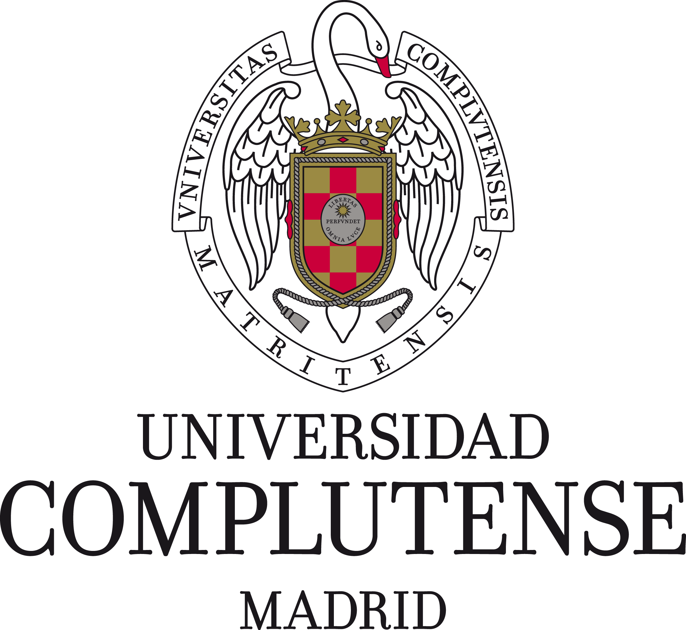
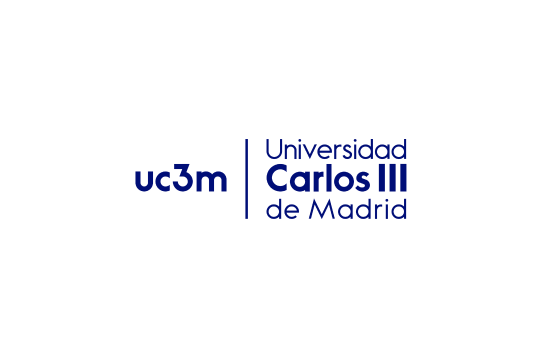

Universidades y Estudios en Madrid
Principales Universidades

Universidad Politécnica de Madrid (UPM)
Especializada en ingenierías y arquitectura.

Universidad Complutense de Madrid (UCM)
Una de las más antiguas y prestigiosas, con una amplia oferta académica.

Universidad Carlos III de Madrid (UC3M)
Conocida por sus programas en ciencias sociales, derecho y economía.
Universidad Autónoma de Madrid (UAM)
Destaca en investigación y ciencias.
Tipos de Estudios y Programas para Extranjeros
- Grados universitarios - Programas de 4 años en diversas disciplinas.
- Másteres - Programas de posgrado especializados.
- Doctorados - Investigación avanzada en diferentes áreas.
- Programas de intercambio - Como Erasmus+ para estudiantes internacionales.
- Cursos de español - Para mejorar el idioma mientras estudias.
Requisitos para Estudiar en España
- Documentación académica - Certificados de estudios previos.
- Prueba de acceso - Selectividad para estudiantes internacionales (UNEDassis).
- Visado de estudiante - Para estancias superiores a 90 días.
- Seguro médico - Obligatorio para estudiantes extranjeros.
- Nivel de español - Certificado DELE o SIELE para algunos programas.